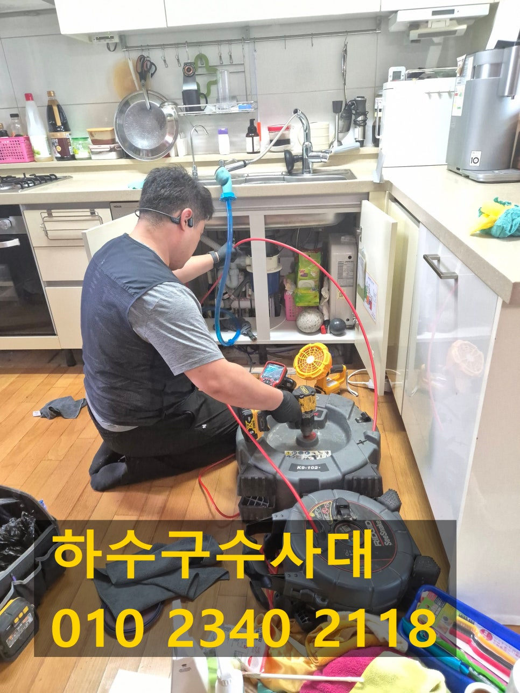
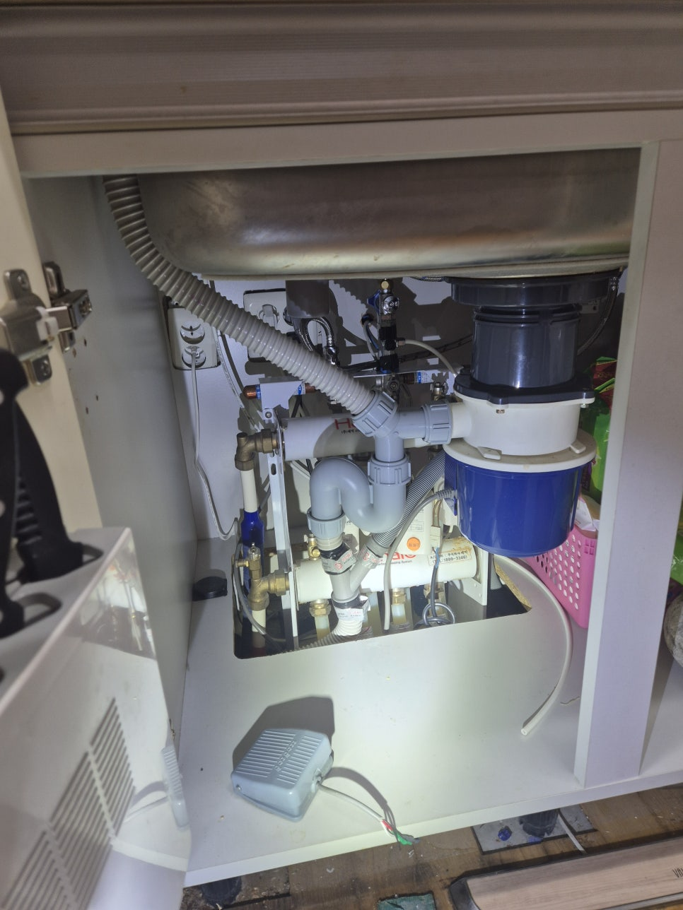
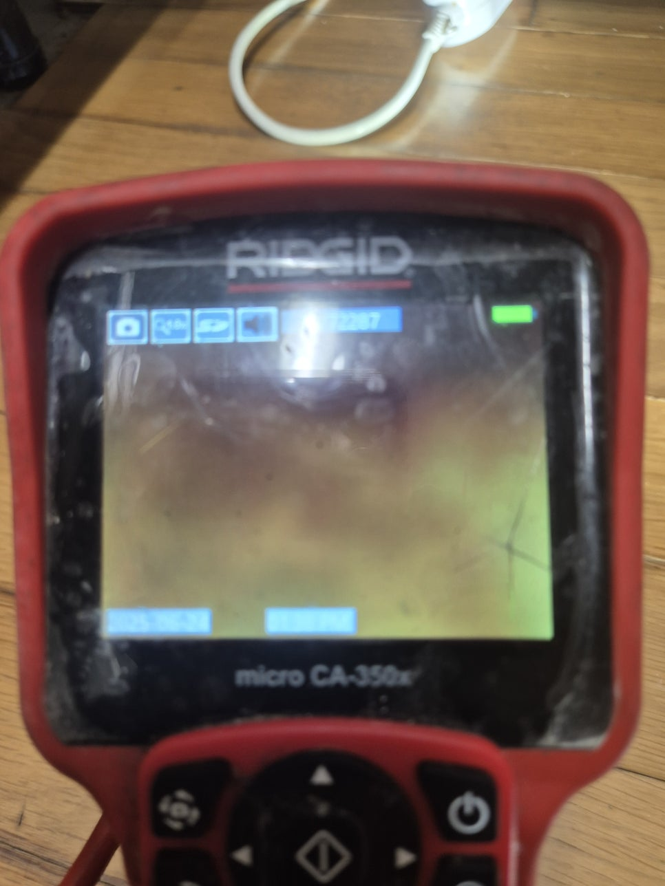
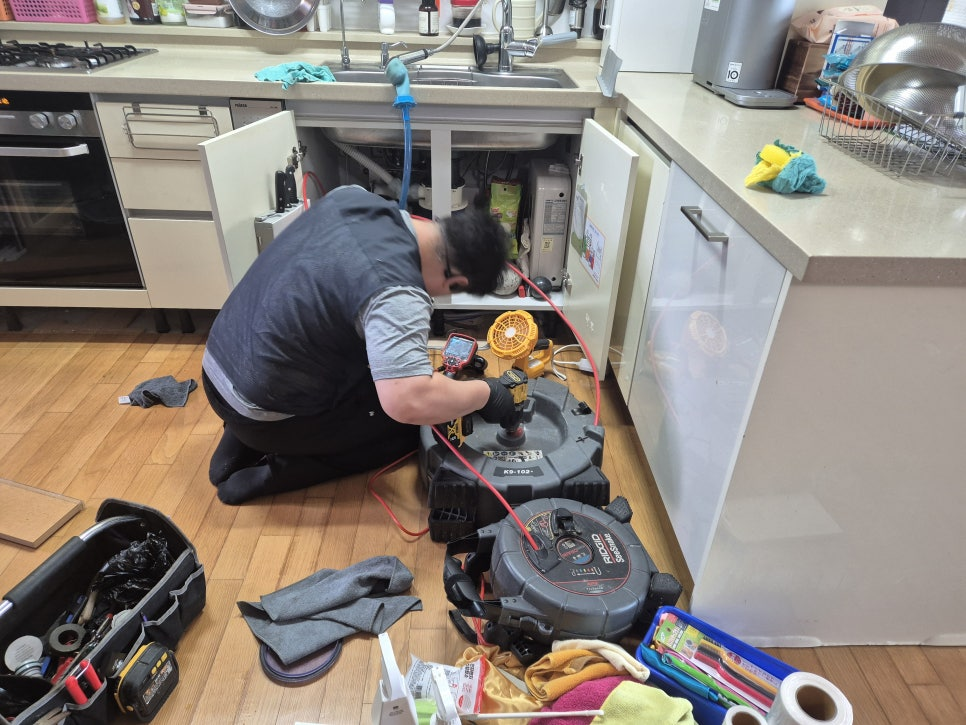
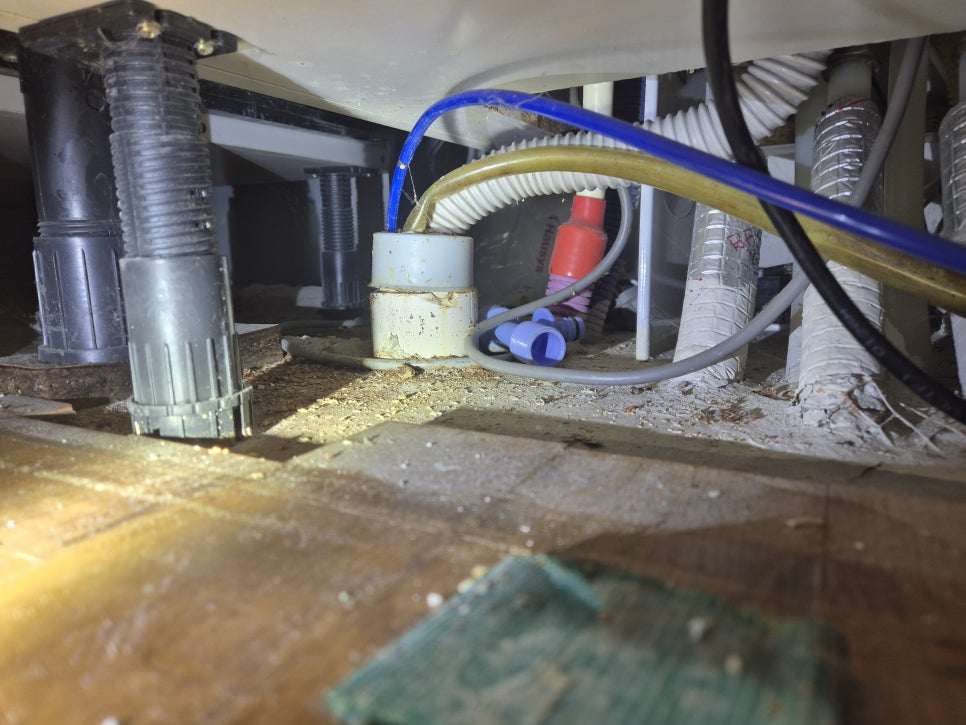
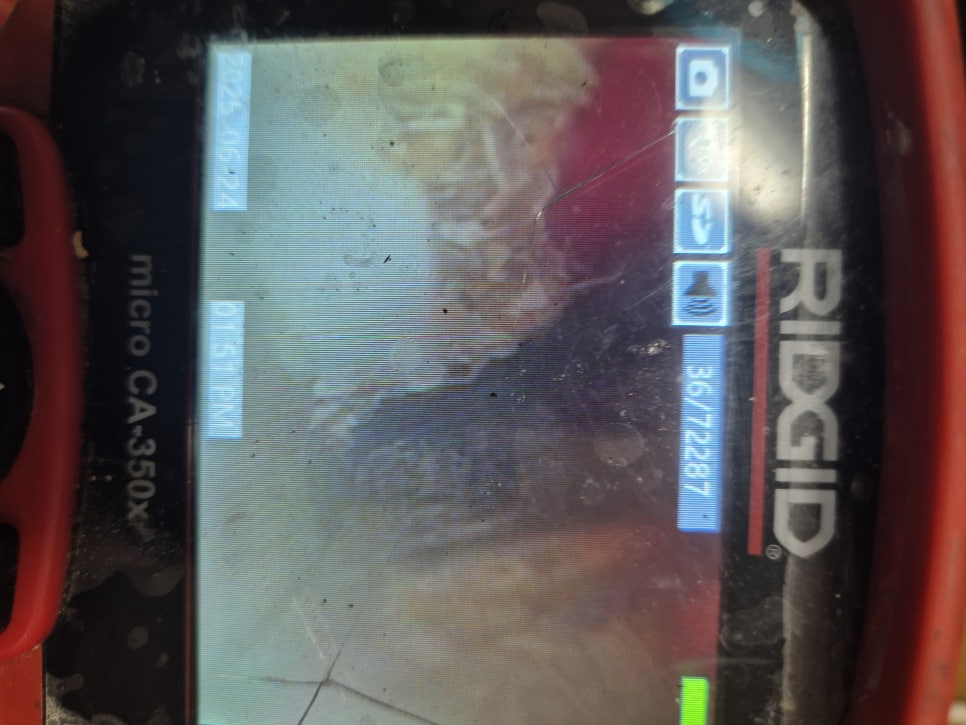
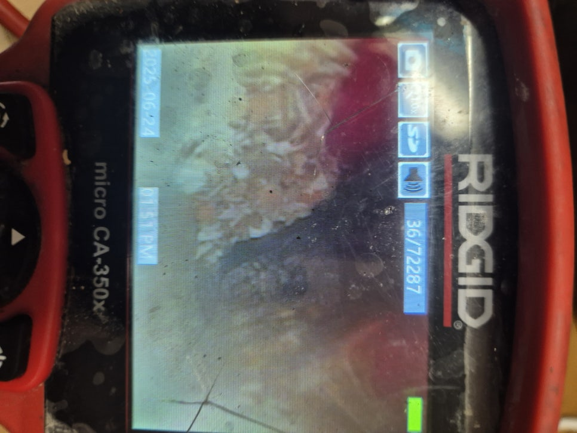

🏠 병점 싱크대 배수관막힘 하수구기름때 뚫는곳 설비업체
화성 병점 싱크대막힘 전문 시공 후기

📋 작업 개요
- 위치: 화성 병점, 병점, 화성
- 서비스 유형: 싱크대막힘, 변기막힘, 하수구막힘, 배관막힘, 맨홀막힘, 역류해결, 뚫는업체, 배관청소, 설비공사
- 작업 일시: 2025. 6. 24. 22:44
- 업체명: 하수구수사대 (010-5615-2118)
🔍 문제 상황
안녕하세요.
설비전문업체 "하수구수사대" 입니다.
병점 싱크대 배수관막힘 하수구기름때 뚫는곳 설비업체
집안일에 생각지도 못한 트러블이 생긴다면 많은 분들이 고민되실 텐데요.
특히나 물 사용이 잦은 주방 또는 욕실에서 갑작스럽게 막힘 문제 등으로 물을 사용하지 못하는 상황이 되었을 경우 얼른 전문 업체에 도움을 요청하는 것이 좋습니다.
싱크대에 물이 고이는 일이 발생하면 밥을 하거나 식재료를 다듬는 등의 작업에 차질이 빚어집니다.
또한 식사 후 설거지도 불가능하므로 막힘 문제가 생기면 얼른 전문가에게 맡기는 것이 좋습니다.
저번에도 한 아파트에서 막힘 증상이 생겨서 정확하게 점검하고 해결해 드리고 왔습니다.
이 댁은 싱크대를 바꾼지 얼마 되지 않았는데도 이런 막힘 현상이 나타났다는 게 의아하게 생각되었는데요.
혼자 힘으로 해결하기 어려운 문제이기 때문에 전문 업체인 저희한테 전화하셨다고 하더라고요.
현장을 방문해 가장 먼저 점검해 본 곳은 주방 하부장 아래쪽이었습니다.
저희가 봤을 땐 벌써 물이 흘러서 흥건히 젖어있을 뿐만 아니라 역류한 양도 아주 많은 듯 했어요.

🔎 원인 분석
💡 전문가 진단: 정밀 진단 장비를 사용하여 슬러지의 고착 여부를 판명하고 타격/세척 작업을 실시했습니다.
여기서 방치되면 곰팡이가 필 뿐만 아니라 아래층에도 물이 새는 일이 이어질 수 있어서 신속하게 작업을 진행했어요.
첫 번째 작업의 진행을 위해 막힌 싱크대에 연결되어 있는 주름관을 해체해서 들여다 보니 과연 이물질이 잔뜩 있더라구요.
까만 것들이 찌꺼기인데 이게 주름 안쪽에 달라붙어 있어요.
또한 하수도 입구에도 이런 찌꺼기들이 잔뜩 붙은 상태여서 깔끔하게 없앨 수 있도록 석션기를 사용했습니다.
석션기는 주름관의 이물질 뿐만 아니라 하수관 내부에 쌓인 것들까지도 흡입할 수 있는 기계인데 이같은 막힘 현상이 발생했을 때 알맞은 장비예요.
이물질로 인해 입구 쪽이 막혀있는 상황에서도 이 석션기만 있으면 얼마든지 해결할 수 있다고 말씀드립니다.
본격적으로 배관을 뚫기 전 석션 작업을 해서 배관 속을 먼저 청소하는데, 문제 해결에 적합한 방법을 찾기 위한 과정이라고 보시면 되겠습니다.
석션기를 여러 번 작동시켜도 막힘 현상이 해결되지 않는 상태여서 하수관 깊은 곳까지 한 번 더 살펴봐야 했어요.
이번에는 배관 내시경 기기를 집어넣고 배관 깊숙한 곳까지 점검합니다.
지금 보시는 사진에서는 모든 부분이 빨갛게 나타나고 있죠.
장비 헤드부분에 전등이 달려있는데, 그걸로 기름찌꺼기를 비춰보면 이렇게 빨간색으로 보이게 되거든요.
즉, 하구관 내에 기름찌꺼기가 쌓인 상태에서는 모니터로 봤을 때 빨간색으로 나타난다는 거에요.
보다 꼼꼼하게 확인해 본 결과, 배관 청소가 시급한 것 같았습니다.

🔧 작업 과정
자꾸 싱크대 막힘이 발생하는 이유는 싱크대 배관 내부에 장기간 축적되어 온 기름찌꺼기라고 판단했어요.
저희가 가져온 것 중에서 기름찌꺼기를 청소하기에 적합한 장비를 가지고 싹 해결해 드리기로 결정했어요.
이 작업을 할 때 필요한 전문 장비 플렉스 샤프트를 준비했어요.
샤프트 케이블 끝 부분에는 헤드가 달려있는데 체인 형태이기 때문에 단단한 덩어리들도 분쇄하여 제거하기 쉽도록 만드는 것인데요.
이처럼 잘게 만들어 두면 처음에는 끄떡없던 기름 덩어리도 남김없이 하수관 밖으로 밀어낼 수 있거든요.
물론 하수관의 구조와 이물질의 위치를 체크하면서 기계를 움직여야 작업이 수월해집니다.
한 번 작업을 시작할 때마다 배관 내시경 카메라로 하수관 내부를 구석구석 확인하였고, 도중에 석션작업까지 꼼꼼하게 진행하여 기름때 없는 깔끔한 하수관을 만들기 위해 노력했습니다.
저희는 겉으로 드러난 문제만 해결하고 끝내지 않습니다.
문제가 나타난 정확한 원인을 찾아내고 완전히 제거해서 싱크대 물고임 문제를 해결하고 배관 내부도 모두 살펴보고, 남아있는 슬러지도 제거해 드립니다.
통수 테스트를 해 보니 물이 고이지 않고 시원하게 흐르는 것으로 보아 공사가 잘 끝났다는 것을 확인할 수 있었어요.
모든 과정이 완료되면 석션기에 연결된 통에 배수관 내부에 축적되어 있었던 이물질들이 보관됩니다.
잘 살펴보면 바닥 부분에 찌꺼기들이 내려앉은 것을 보실 수 있을 거에요.
이런 찌꺼기들은 하수관에 바로 부으면 막히므로 필터로 덩어리들을 별도로 거른 후 따로따로 처리해야 됩니다.
대부분의 경우 이 정도로 작업이 끝납니다.
이번 고객님댁의 주름관은 상당히 노후된 상태여서 버려야 했는데요.
이 주름관도 새 제품으로 교체하니 그동안 있었던 막힘 현상이 생기면 완전히 해결될 수 있었습니다.
부엌 싱크대가 반복적으로 막히는 상황이라면 시중의 배관 세정제만으로는 문제를 해결하기 어렵습니다.
그리고 슬러지가 두껍게 쌓여있는 경우에도 전문 도구를 써서 안전하고 정확하게 제거하는 것이 좋습니다.
전문가의 도움을 요청해야 배관이 손상되는 일 없이 문제가 해결됩니다.
그러니 내시경 카메라나 배관 막힘 전문 도구를 보유한 업체로 알아보셔야 작업이 완벽히 진행됨을 기억해 주세요.


✅ 작업 완료
막힘 문제로 배관을 수리해야 하는 분들은 실력과 장비를 갖춘 저희한테 의뢰해 주시면 확실하게 해결해 드릴게요!
하수구수사대 010 2340 2118
경기도 화성시 효행로 1060 10층 1004-A246호
#병점하수구막힘 #병점싱크대막힘 #병점싱크대역류 #병점배수관막힘 #병점배관뚫는곳 #병점설비 #병점맨홀막힘 #병점하수구뚫는업체 #병점변기막힘
#진안동하수구막힘 #진안동싱크대막힘 #진안동싱크대역류 #진안동하수구역류 #진안동화장실막힘 #진안동설비 #진안동하수구뚫는곳 #진안동하수구뚫는업체 #진안동변기막힘




⚠️ 주방 싱크대 배관 막힘 예방 수칙
- ✅ 기름기가 묻은 식기나 프라이팬은 설거지 전 키친타올로 반드시 기름때를 닦아내세요.
- ✅ 주기적으로 싱크대 개수대에 뜨거운 물을 가득 받아 한 번에 내려 배관 내부 기름을 씻어내세요.
- ✅ 배수구 거름망을 미세한 필터로 사용하시고 음식물 찌꺼기가 틈으로 새어 들지 않게 관리하세요.
- ✅ 베이킹소다와 식초를 뜨거운 물과 함께 일주일에 한 번씩 부어주면 배관 살균과 막힘 예방에 좋습니다.
💡 핵심 정리
- 확실한 장비 작업(내시경 점검 및 샤프트 스케일링)으로 원인을 뿌리 뽑습니다.
- 작업 후 1년 이내에 동일한 부위 재발 시 100% 무상 A/S 서비스를 보장합니다.
- 서울 · 경기 · 인천 전 지역에 24시간 언제든 긴급 출동할 수 있도록 항시 대기 중입니다.
❓ 자주 묻는 질문 (FAQ)
🚨 화성 병점 싱크대막힘 문제로 고민이신가요?
정확한 원인 진단과 확실한 시공으로 재발 없는 해결을 약속드립니다.
24시간 긴급 출동 | 서울 · 경기 · 인천 전지역 | 1년 내 재발 시 무상 A/S